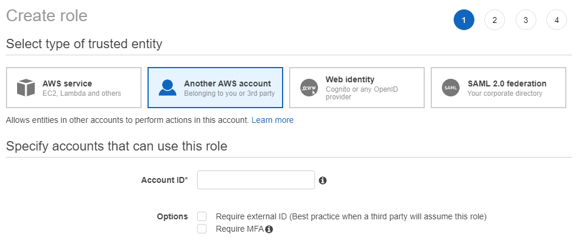

Demander de modifier un document
Demander de modifier un document Modifier sur GitHub
Modifier sur GitHub Guide des contributeurs
Guide des contributeursConsultez les documents sur la dernière version.
Ajout de comptes de fournisseurs cloud à Cloud Manager
Contributeurs
Si vous souhaitez déployer Cloud Volumes ONTAP sur différents comptes cloud, vous devez fournir les autorisations requises pour ces comptes, puis ajouter les informations à Cloud Manager.
Lorsque vous déployez Cloud Manager depuis Cloud Central, Cloud Manager ajoute automatiquement un "compte de fournisseur cloud" Pour le compte dans lequel vous avez déployé Cloud Manager. Aucun compte de fournisseur cloud initial n’est ajouté si vous avez installé manuellement le logiciel Cloud Manager sur un système existant.
Configuration et ajout de comptes AWS à Cloud Manager
Si vous souhaitez déployer Cloud Volumes ONTAP sur différents comptes AWS, vous devez fournir les autorisations requises à ces comptes, puis ajouter les informations à Cloud Manager. La manière dont vous fournissez les autorisations dépend de votre choix si vous souhaitez fournir Cloud Manager avec des clés AWS ou le NRA d’un rôle dans un compte de confiance.
-
permissions when providing AWS keys
-
permissions by assuming IAM roles in other accounts
Octroi d’autorisations lors de l’utilisation de clés AWS
Si vous souhaitez fournir Cloud Manager avec des clés AWS pour un utilisateur IAM, vous devez accorder les autorisations requises à cet utilisateur. La stratégie IAM de Cloud Manager définit les actions et les ressources AWS que Cloud Manager est autorisé à utiliser.
-
Téléchargez la politique IAM de Cloud Manager à partir du "Page Cloud Manager Policies".
-
À partir de la console IAM, créez votre propre stratégie en copiant et en collant le texte de la stratégie IAM de Cloud Manager.
-
Joignez la politique à un rôle IAM ou à un utilisateur IAM.
Le compte dispose désormais des autorisations requises. AWS accounts to Cloud Manager,Vous pouvez désormais l’ajouter à Cloud Manager.
Octroi d’autorisations en assumant des rôles IAM dans d’autres comptes
Vous pouvez définir une relation de confiance entre le compte AWS source dans lequel vous avez déployé l’instance Cloud Manager et d’autres comptes AWS en utilisant les rôles IAM. Vous pouvez ensuite fournir à Cloud Manager l’ARN des rôles IAM depuis les comptes de confiance.
-
Accédez au compte cible sur lequel vous souhaitez déployer Cloud Volumes ONTAP et créez un rôle IAM en sélectionnant un autre compte AWS.
Assurez-vous de faire ce qui suit :
-
Entrez l’ID du compte sur lequel réside l’instance Cloud Manager.
-
Joignez la politique IAM de Cloud Manager, disponible à partir du "Page Cloud Manager Policies".

-
-
Accédez au compte source où réside l’instance Cloud Manager et sélectionnez le rôle IAM associé à l’instance.
-
Cliquez sur Trust relations > Modifier la relation de confiance.
-
Ajoutez l’action « sts:AssumeRole » et l’ARN du rôle que vous avez créé dans le compte cible.
Exemple
{ "Version": "2012-10-17", "Statement": { "Effect": "Allow", "Action": "sts:AssumeRole", "Resource": "arn:aws:iam::ACCOUNT-B-ID:role/ACCOUNT-B-ROLENAME" } } -
Le compte dispose désormais des autorisations requises. AWS accounts to Cloud Manager,Vous pouvez désormais l’ajouter à Cloud Manager.
Ajout de comptes AWS à Cloud Manager
Une fois que vous avez passé un compte AWS avec les autorisations requises, vous pouvez ajouter le compte à Cloud Manager. Vous pouvez ainsi lancer les systèmes Cloud Volumes ONTAP de ce compte.
-
Dans le coin supérieur droit de la console Cloud Manager, cliquez sur la liste déroulante des tâches, puis sélectionnez Paramètres du compte.
-
Cliquez sur Ajouter un nouveau compte et sélectionnez AWS.
-
Indiquez si vous souhaitez fournir des clés AWS ou l’ARN d’un rôle IAM approuvé.
-
Vérifiez que les exigences de la stratégie ont été respectées, puis cliquez sur Créer un compte.
Vous pouvez maintenant passer à un autre compte à partir de la page Détails et informations d’identification lors de la création d’un nouvel environnement de travail :

Configuration et ajout de comptes Azure dans Cloud Manager
Si vous souhaitez déployer Cloud Volumes ONTAP sur différents comptes Azure, vous devez fournir les autorisations requises pour ces comptes, puis ajouter des informations sur ces comptes à Cloud Manager.
-
Azure permissions using a service principal
-
Azure accounts to Cloud Manager
Octroi d’autorisations Azure à l’aide d’une entité de sécurité de service
Cloud Manager a besoin d’autorisations pour effectuer des actions dans Azure. Vous pouvez accorder les autorisations requises à un compte Azure en créant et en configurant une entité de sécurité de service dans Azure Active Directory et en obtenant les informations d’identification Azure requises par Cloud Manager.
L’image suivante illustre comment Cloud Manager obtient les autorisations nécessaires pour effectuer des opérations dans Azure. Un objet principal de service, lié à un ou plusieurs abonnements Azure, représente Cloud Manager dans Azure Active Directory et est affecté à un rôle personnalisé qui permet les autorisations requises.


|
Les étapes suivantes utilisent le nouveau portail Azure. Si vous rencontrez des problèmes, vous devez utiliser le portail Azure classique. |
-
a custom role with the required Cloud Manager permissions,Créez un rôle personnalisé avec les autorisations Cloud Manager requises.
-
an Active Directory service principal,Créez un principal de service Active Directory.
-
the Cloud Manager Operator role to the service principal,Attribuez le rôle d’opérateur Cloud Manager personnalisé à l’entité principal de service.
Création d’un rôle personnalisé avec les autorisations Cloud Manager requises
Un rôle personnalisé est requis pour fournir à Cloud Manager les autorisations dont il a besoin pour lancer et gérer Cloud Volumes ONTAP dans Azure.
-
Téléchargez le "Politique de Cloud Manager Azure".
-
Modifiez le fichier JSON en ajoutant des identifiants d’abonnement Azure à l’étendue assignable.
Vous devez ajouter l’ID de chaque abonnement Azure à partir duquel les utilisateurs créeront des systèmes Cloud Volumes ONTAP.
Exemple
"AssignableScopes": [ "/subscriptions/d333af45-0d07-4154-943d-c25fbzzzzzzz", "/subscriptions/54b91999-b3e6-4599-908e-416e0zzzzzzz", "/subscriptions/398e471c-3b42-4ae7-9b59-ce5bbzzzzzzz" -
Utilisez le fichier JSON pour créer un rôle personnalisé dans Azure.
L’exemple suivant montre comment créer un rôle personnalisé à l’aide de l’interface de ligne de commande Azure CLI 2.0 :
Définition de rôle az create --role-definition C:\Policy_for_Cloud_Manager_Azure_3.6.1.json
Vous devez maintenant disposer d’un rôle personnalisé appelé opérateur OnCommand Cloud Manager.
Création d’un principal de service Active Directory
Vous devez créer un principal de service Active Directory pour que Cloud Manager puisse s’authentifier auprès d’Azure Active Directory.
Vous devez disposer des autorisations appropriées dans Azure pour créer une application Active Directory et attribuer l’application à un rôle. Pour plus de détails, reportez-vous à "Documentation Microsoft Azure : utilisez le portail pour créer une application Active Directory et un service principal pouvant accéder aux ressources".
-
À partir du portail Azure, ouvrez le service Azure Active Directory.

-
Dans le menu, cliquez sur enregistrements d’applications (Legacy).
-
Créez le principal de service :
-
Cliquez sur enregistrement de la nouvelle application.
-
Entrez un nom pour l’application, conservez Web app / API sélectionnée, puis entrez une URL, par exemple, http://url
-
Cliquez sur Créer.
-
-
Modifiez l’application pour ajouter les autorisations requises :
-
Sélectionnez l’application créée.
-
Sous Paramètres, cliquez sur autorisations requises, puis sur Ajouter.

-
Cliquez sur sélectionnez une API, sélectionnez Windows Azure Service Management API, puis cliquez sur Select.

-
Cliquez sur Access Azure Service Management en tant qu’utilisateurs d’organisation, cliquez sur Select, puis sur Done.
-
-
Créez une clé pour le principal de service :
-
Sous Paramètres, cliquez sur touches.
-
Entrez une description, sélectionnez une durée, puis cliquez sur Enregistrer.
-
Copiez la valeur de la clé.
Vous devez saisir la valeur clé lorsque vous ajoutez un compte de fournisseur cloud à Cloud Manager.
-
Cliquez sur Propriétés, puis copiez l’ID de l’application pour le principal de service.
Comme la clé, vous devez saisir l’ID d’application dans Cloud Manager lorsque vous ajoutez un compte de fournisseur cloud à Cloud Manager.

-
-
Obtenez l’ID du locataire Active Directory pour votre entreprise :
-
Dans le menu Active Directory, cliquez sur Propriétés.
-
Copiez l’ID du répertoire.

Comme l’ID d’application et la clé d’application, vous devez entrer l’ID de locataire Active Directory lorsque vous ajoutez un compte de fournisseur cloud à Cloud Manager.
-
Vous devez maintenant disposer d’un principal de service Active Directory et copier l’ID de l’application, la clé d’application et l’ID du locataire Active Directory. Vous devez saisir ces informations dans Cloud Manager lorsque vous ajoutez un compte de fournisseur cloud.
Attribution du rôle d’opérateur Cloud Manager au principal de service
Vous devez associer le principal de service à un ou plusieurs abonnements Azure et lui attribuer le rôle d’opérateur Cloud Manager pour que Cloud Manager dispose des autorisations dans Azure.
Si vous souhaitez déployer Cloud Volumes ONTAP à partir de plusieurs abonnements Azure, vous devez lier le principal de service à chacun de ces abonnements. Cloud Manager vous permet de sélectionner l’abonnement que vous souhaitez utiliser lors du déploiement de Cloud Volumes ONTAP.
-
Dans le portail Azure, sélectionnez abonnements dans le volet gauche.
-
Sélectionnez l’abonnement.
-
Cliquez sur contrôle d’accès (IAM), puis sur Ajouter.
-
Sélectionnez le rôle opérateur OnCommand Cloud Manager.
-
Recherchez le nom de l’application (vous ne pouvez pas le trouver dans la liste en faisant défiler).
-
Sélectionnez l’application, cliquez sur Sélectionner, puis sur OK.
Le principal de service de Cloud Manager dispose désormais des autorisations Azure requises.
Ajout de comptes Azure à Cloud Manager
Une fois que vous avez autorisé à fournir un compte Azure, vous pouvez l’ajouter à Cloud Manager. Vous pouvez ainsi lancer les systèmes Cloud Volumes ONTAP de ce compte.
-
Dans le coin supérieur droit de la console Cloud Manager, cliquez sur la liste déroulante des tâches, puis sélectionnez Paramètres du compte.
-
Cliquez sur Ajouter un nouveau compte et sélectionnez Microsoft Azure.
-
Entrez des informations sur l’entité de sécurité du service Azure Active Directory qui accorde les autorisations requises.
-
Vérifiez que les exigences de la stratégie ont été respectées, puis cliquez sur Créer un compte.
Vous pouvez maintenant passer à un autre compte à partir de la page Détails et informations d’identification lors de la création d’un nouvel environnement de travail :

Association d’abonnements Azure supplémentaires à une identité gérée
Cloud Manager vous permet de choisir le compte et l’abonnement Azure dans lesquels vous souhaitez déployer Cloud Volumes ONTAP. Vous ne pouvez pas sélectionner un autre abonnement Azure pour le profil d’identité gérée à moins d’associer le "identité gérée" avec ces abonnements.
Une identité gérée est la première "compte de fournisseur cloud" Lorsque vous déployez Cloud Manager à partir de NetApp Cloud Central. Lorsque vous avez déployé Cloud Manager, Cloud Central a créé le rôle OnCommand Cloud Manager Operator et l’a affecté à la machine virtuelle Cloud Manager.
-
Connectez-vous au portail Azure.
-
Ouvrez le service abonnements, puis sélectionnez l’abonnement dans lequel vous souhaitez déployer des systèmes Cloud Volumes ONTAP.
-
Cliquez sur contrôle d’accès (IAM).
-
Cliquez sur Ajouter > Ajouter une affectation de rôle, puis ajoutez les autorisations suivantes :
-
Sélectionnez le rôle opérateur OnCommand Cloud Manager.
L’opérateur OnCommand Cloud Manager est le nom par défaut fourni dans "Politique de Cloud Manager". Si vous avez choisi un autre nom pour le rôle, sélectionnez-le à la place. -
Attribuez l’accès à une machine virtuelle.
-
Sélectionnez l’abonnement dans lequel la machine virtuelle Cloud Manager a été créée.
-
Sélectionnez la machine virtuelle Cloud Manager.
-
Cliquez sur Enregistrer.
-
-
-
Répétez ces étapes pour les abonnements supplémentaires.
Lorsque vous créez un nouvel environnement de travail, vous devriez désormais pouvoir sélectionner plusieurs abonnements Azure pour le profil d’identité géré.